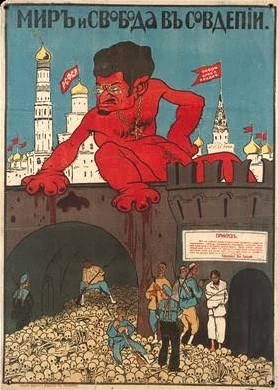

Masters Certificate
Advanced education for leaders, advocates, educators, and policy professionals developing institutional strategy and public leadership.
Educational initiative · Research · Training
STOPAZ is an educational, analytical, and advocacy initiative that develops research, curricula, training, and public resources for recognizing and confronting antizionism.

About STOPAZ
STOPAZ connects historical scholarship with practical education. Its work examines the continuity between anti-Judaism, racial antisemitism, and contemporary antizionism while developing tools for schools, universities, communities, and professional institutions.
The initiative’s public work includes certificate education, institutional training, research, the Global Declaration, events, and a visual Exhibition.
About the initiativeEducation & certification
Flagship program
Structured training for students, professionals, educators, and community members seeking a rigorous introduction to antizionism, misinformation, historical continuity, and effective response.
Program information
Advanced education for leaders, advocates, educators, and policy professionals developing institutional strategy and public leadership.
Customized workshops, curriculum support, briefings, and professional education for schools, universities, organizations, and leadership teams.
Core work
Historical genealogy, narrative systems, propaganda, institutional spread, and strategic response.
Explore researchCertificate programs, workshops, curriculum, schools, universities, and professional learning.
Explore educationPublic language for institutions, leaders, organizations, and communities.
Read the declarationLectures, panels, certificate cohorts, educational workshops, and public convenings.
View programs
Audiences